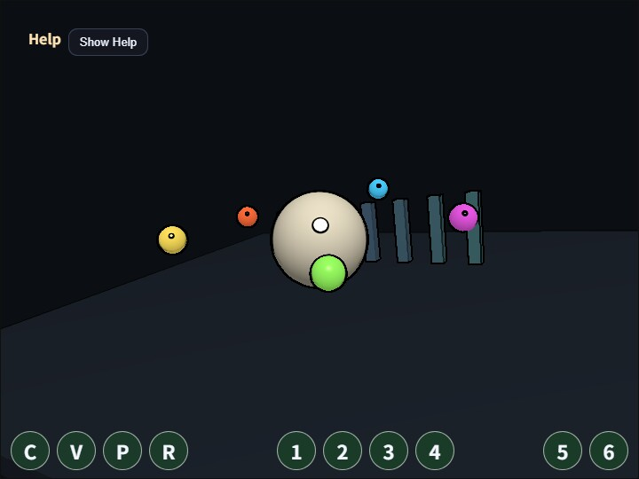

compute_edge
English | 日本語

概要
Edge 検出は、現在の pixel と周囲の pixel の明るさの差を調べ、画像内の境界を線として取り出す処理です。このサンプルでは scene color の 3x3 近傍を Compute Shader で読み、Sobel filter によって横方向と縦方向の輝度変化を求めます。
処理は compute_vignette と同じ単一 dispatch の流れです。通常の 3D scene を offscreen target へ描き、Compute Shader がその color texture を読み、結果を storage texture へ書きます。違いは、1 pixel の色を決めるために周囲 8 pixel も読む点です。画面端では座標を clamp し、dispatch が 8 の倍数へ切り上がっても texture 外へ書き込まないよう WGSL 側で範囲確認しています。
このサンプルの役割は、Compute Shader で近傍参照を行うときの基礎を示すことです。Sobel filter は、Blur、SSAO、SSR のように周辺 pixel を読む処理を理解しやすい題材です。Edge処理にはコアのwebg/ComputeEdgePass.jsを使い、scene描画、入力、HUDをeffect本体から分離しています。
実行方法
- 実行ファイルは ./compute_edge.html です
- WebGPU に対応したブラウザで開き、必要に応じて help panel や HUD と合わせて確認してください
確認ポイント
C で処理の ON/OFF、V で元 scene と compute 出力を切り替えます。柱、球、床の境界が黒い線として暗くなること、動いている小球の輪郭にも線が追従することを確認してください。
strength は Sobel 勾配の増幅、threshold は線として残す境界の強さ、source mix は線の効き方の強さです。7 / 8 では edge mask の膨張半径を変える thickness を切り替え、細い線から太い線まで比較できます。M では black-multiply、black-subtract、white-add を順に切り替えられます。black-multiply は暗い面では控えめ、black-subtract は暗部でも差を出しやすく、white-add は明るい線を上乗せします。
注意点として、このサンプルは color texture の輝度差だけを見ます。深度や法線は使わないため、同じ明るさの隣接面は境界が弱くなり、逆に texture や specular の明暗差は線として出ます。形状の輪郭だけを正確に取りたい場合は、G-buffer の normal や depth を使う別の設計が必要です。